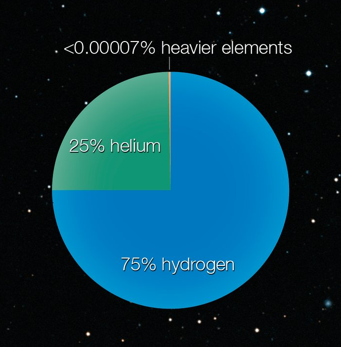

Chemical Composition
Stars in the Milky Way galaxy is composed 75% Hydrogen and 25% Helium

Stars in the Milky Way galaxy is composed 75% Hydrogen and 25% Helium
Astronomers uses the method of spectroscopy.
Spectroscopy involves using instruments with a grating that will expand light from the object using wavelengths.
Each element has its own unique wavelengths where the absorption line occurs.
The amount of light absorbed can provide information on the quantity that is present in each element.